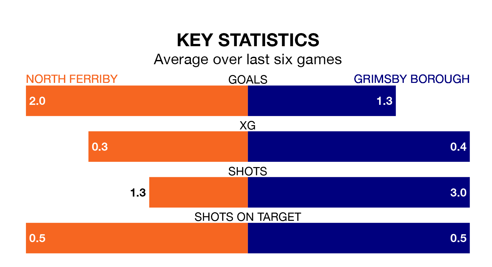

Grimsby Borough make the journey to play North Ferriby on late Tuesday looking to pick up points to end their five-game losing streak.
Grimsby's struggles have left them with just three points from their last six Northern Premier League – Division One East matches, while their opponents have earned 10 from a possible 18.
With 30 goals in 15 games so far this season, North Ferriby are scoring more than average in the league with 2.0 goals per game. But they are conceding more than average too, letting in 32 goals at a rate of 2.1 per game.
Grimsby, meanwhile, are below average scorers, with 1.4 goals per game, compared to a league average of 1.7. They have conceded 1.9 goals per game.
Borough are 18th in the table after 14 games, of which they have won four and drawn one, earning 13 points.
The hosts are 12 places ahead of the away team in sixth, with eight wins and two draws putting them on 26 points.
North Ferriby's last match was on November 25, a 4-4 draw against Sheffield FC.
Grimsby lost 2-1 against Pontefract Collieries last time out, also on November 25.
